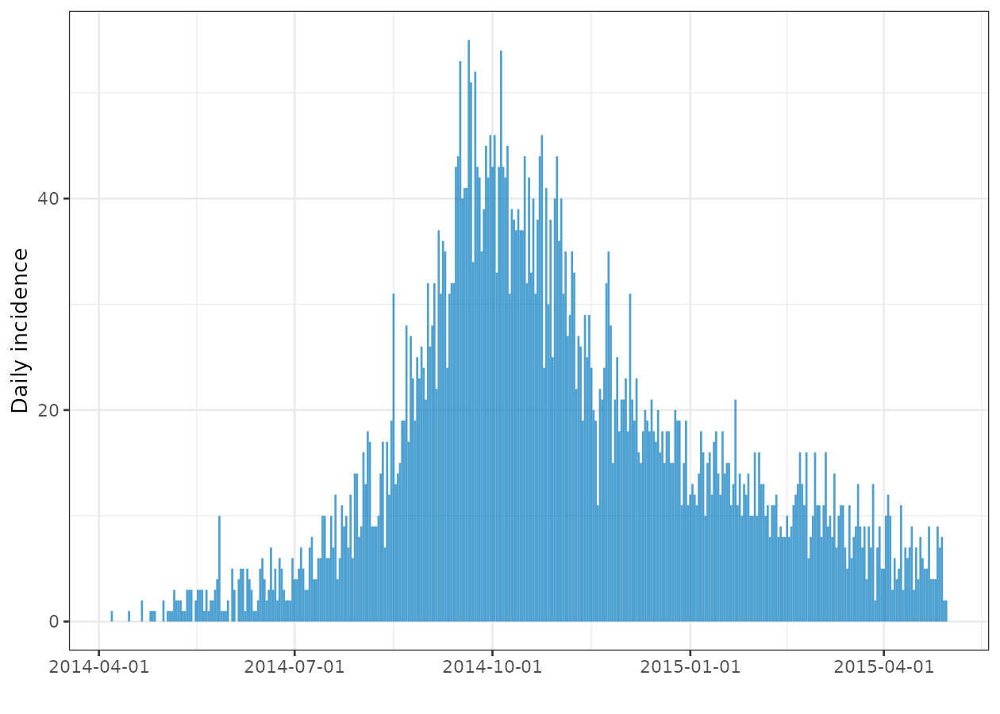
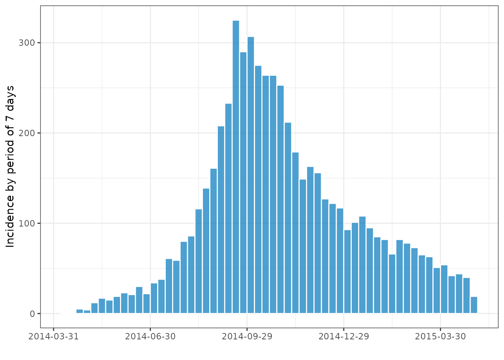
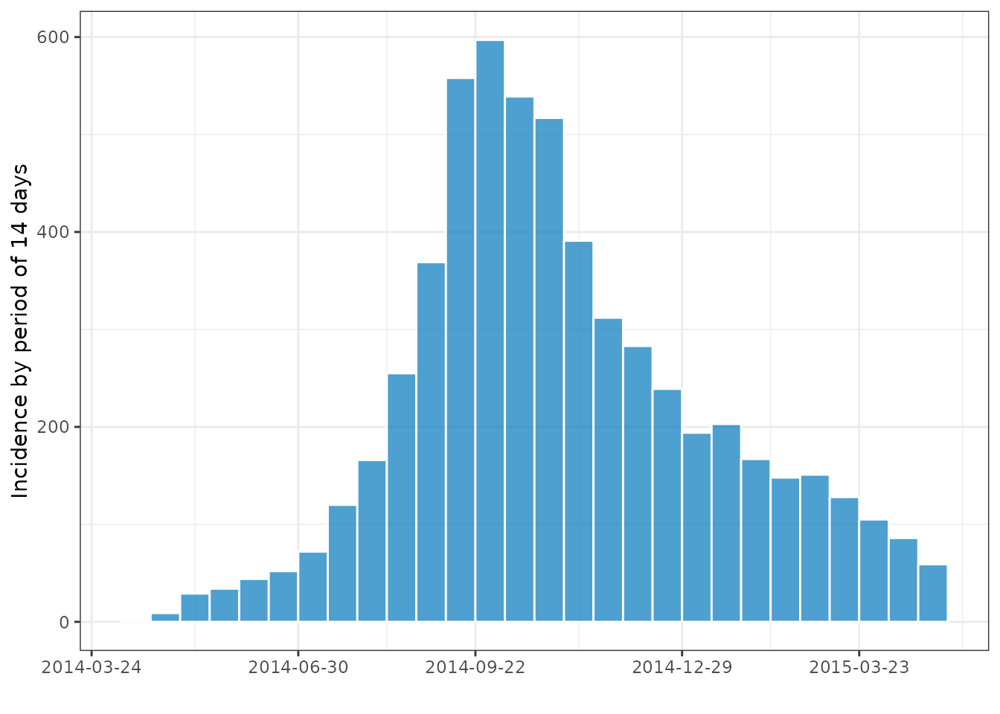
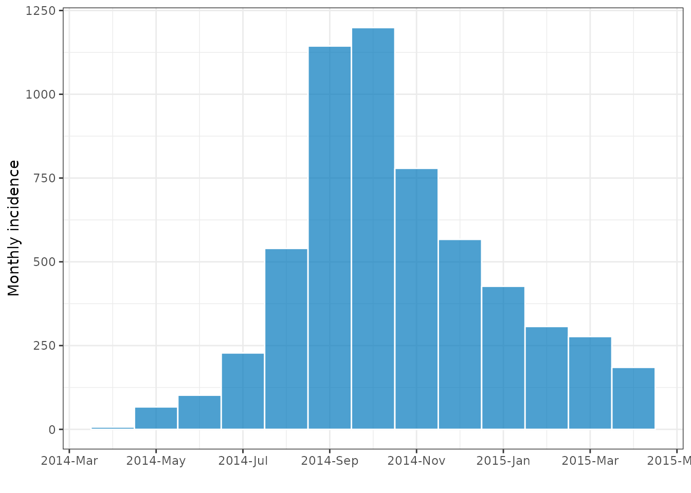
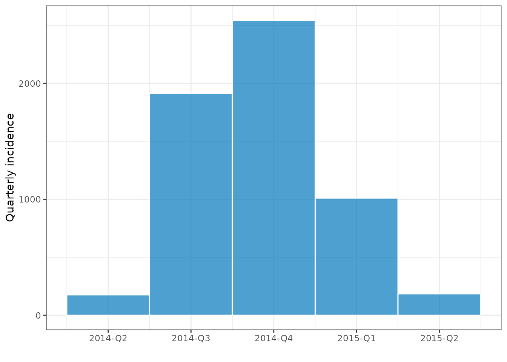
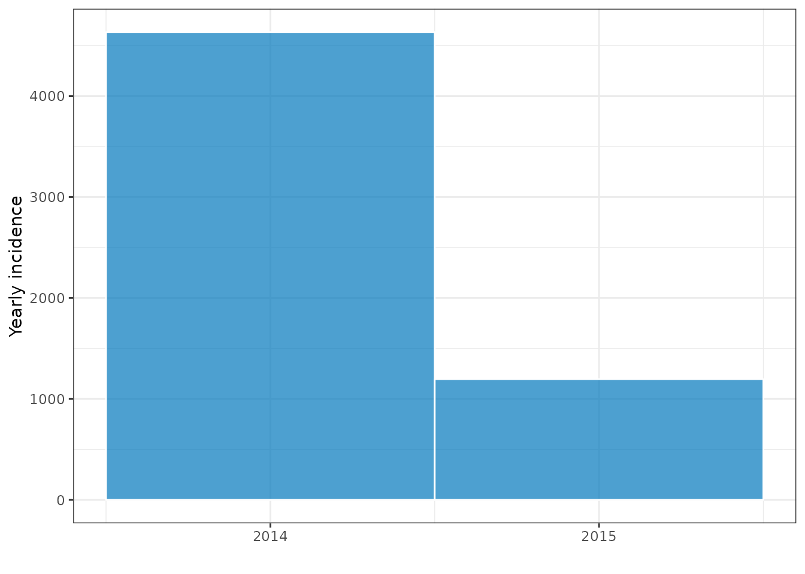
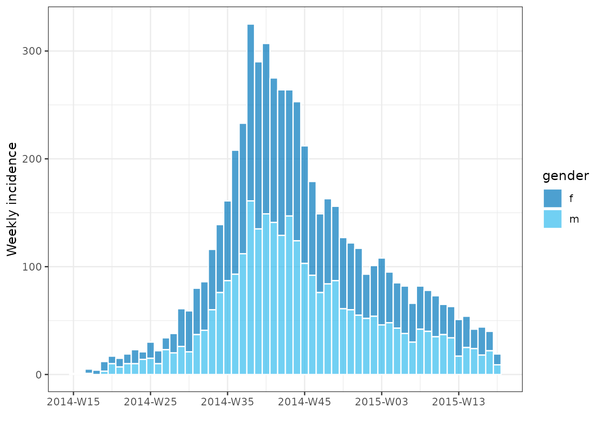
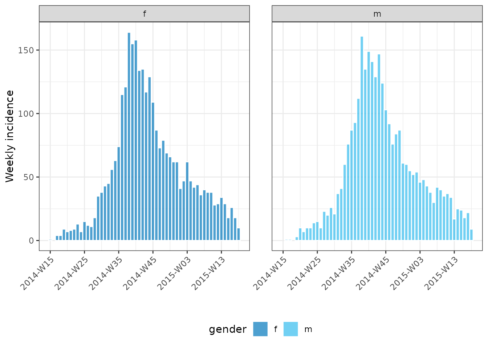
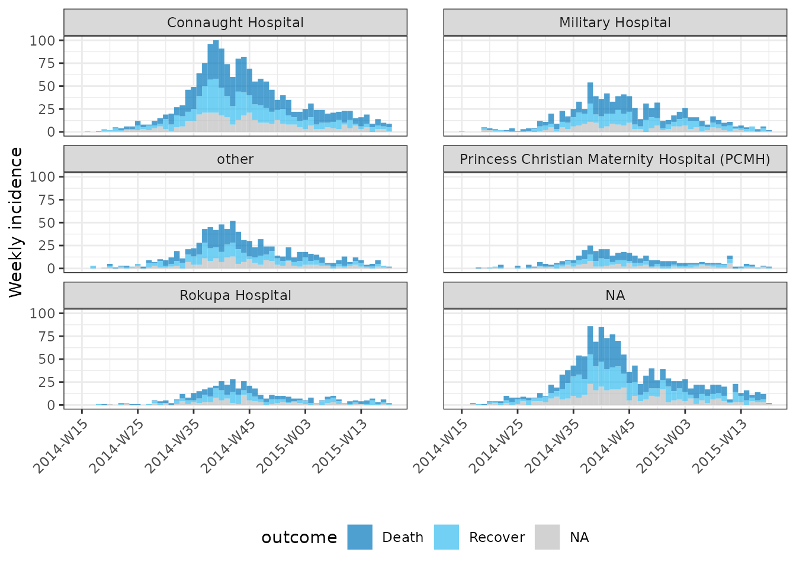

What does it do?
incidence2 is an R package that implements functions and classes to compute, handle and visualise incidence from linelist data.
The main features of the package include:
- The
incidence()andbuild_incidence()functions compute incidence from both linelist and pre-aggregated datasets across a range of date groupings. The returned object fromincidence()is a subclass of tibble. This is compatible with dplyr for data manipulation (seevignette("handling_incidence_objects")for more details). - Plotting methods,
plot.incidence2()andfacet_plot.incidence2()that provide quick plots with sensible defaults. - Additional functions for handling incidence objects, including:
-
regroup(): regroup incidence from different groups into one global incidence time series. -
keep_first()andkeep_last(): will keep the rows corresponding to the first (or last) set of grouped dates (ordered by time) from anincidence()object. -
complete_counts(): ensure every possible combination of date and groupings is given an explicit count. -
print.incidence_df()** andsummary.incidence_df()methods. -
as.data.frame.incidence_df()andas_tibble.incidence_df()conversion methods. - Accessor functions:
get_count_names(),get_dates_name(),get_date_index(),get_group_names(),get_interval(),get_timespan()andget_n().
-
Worked example: simulated Ebola outbreak
This example uses the simulated Ebola Virus Disease (EVD) outbreak from the package outbreaks. We will compute incidence for various time steps and illustrate how to easily plot the data.
Loading the data
library(outbreaks)
library(incidence2)
dat <- ebola_sim_clean$linelist
class(dat)
#> [1] "data.frame"
str(dat)
#> 'data.frame': 5829 obs. of 11 variables:
#> $ case_id : chr "d1fafd" "53371b" "f5c3d8" "6c286a" ...
#> $ generation : int 0 1 1 2 2 0 3 3 2 3 ...
#> $ date_of_infection : Date, format: NA "2014-04-09" ...
#> $ date_of_onset : Date, format: "2014-04-07" "2014-04-15" ...
#> $ date_of_hospitalisation: Date, format: "2014-04-17" "2014-04-20" ...
#> $ date_of_outcome : Date, format: "2014-04-19" NA ...
#> $ outcome : Factor w/ 2 levels "Death","Recover": NA NA 2 1 2 NA 2 1 2 1 ...
#> $ gender : Factor w/ 2 levels "f","m": 1 2 1 1 1 1 1 1 2 2 ...
#> $ hospital : Factor w/ 5 levels "Connaught Hospital",..: 2 1 3 NA 3 NA 1 4 3 5 ...
#> $ lon : num -13.2 -13.2 -13.2 -13.2 -13.2 ...
#> $ lat : num 8.47 8.46 8.48 8.46 8.45 ...Computing and plotting incidence
To compute daily incidence we must pass observation data in the form
of a data.frame to incidence(). We must also pass
the name of a date variable in the data that we can use to index the
input:
First compute the daily incidence:
daily <- incidence(dat, date_index = date_of_onset)
daily
#> An incidence object: 367 x 2
#> date range: [2014-04-07] to [2015-04-30]
#> cases: 5829
#> interval: 1 day
#> cumulative: FALSE
#>
#> date_index count
#> <date> <int>
#> 1 2014-04-07 1
#> 2 2014-04-15 1
#> 3 2014-04-21 2
#> 4 2014-04-25 1
#> 5 2014-04-26 1
#> 6 2014-04-27 1
#> 7 2014-05-01 2
#> 8 2014-05-03 1
#> 9 2014-05-04 1
#> 10 2014-05-05 1
#> # … with 357 more rows
summary(daily)
#> date range: [2014-04-07] to [2015-04-30]
#> cases: 5829
#> interval: 1 day
#> cumulative: FALSE
#> timespan: 389 days
plot(daily)
The daily incidence is quite noisy, but we can easily compute other incidence using other time intervals
# 7 day incidence
seven <- incidence(dat, date_index = date_of_onset, interval = 7)
seven
#> An incidence object: 56 x 2
#> date range: [2014-04-07 to 2014-04-13] to [2015-04-27 to 2015-05-03]
#> cases: 5829
#> interval: 7 days
#> cumulative: FALSE
#>
#> date_index count
#> <period> <int>
#> 1 2014-04-07 to 2014-04-13 1
#> 2 2014-04-14 to 2014-04-20 1
#> 3 2014-04-21 to 2014-04-27 5
#> 4 2014-04-28 to 2014-05-04 4
#> 5 2014-05-05 to 2014-05-11 12
#> 6 2014-05-12 to 2014-05-18 17
#> 7 2014-05-19 to 2014-05-25 15
#> 8 2014-05-26 to 2014-06-01 19
#> 9 2014-06-02 to 2014-06-08 23
#> 10 2014-06-09 to 2014-06-15 21
#> # … with 46 more rows
plot(seven, color = "white")
Notice how specifying the interval as 7 creates weekly intervals with
the coverage displayed by date. Below we illustrate how
incidence() also allows us to create year-weekly groupings
with the default being weeks starting on a Monday (following the ISO
8601 date and time standard).
# year-weekly, starting on Monday (ISO week, default)
weekly <- incidence(dat, date_index = date_of_onset, interval = "week")
plot(weekly, color = "white")incidence() will also work with larger intervals
# bi-weekly, based on first day in data
biweekly <- incidence(dat, date_index = date_of_onset, interval = "2 weeks")
plot(biweekly, color = "white")
# monthly
monthly <- incidence(dat, date_index = date_of_onset, interval = "month")
plot(monthly, color = "white")
# quarterly
quarterly <- incidence(dat, date_index = date_of_onset, interval = "quarter")
plot(quarterly, color = "white")
# year
yearly <- incidence(dat, date_index = date_of_onset, interval = "year")
plot(yearly, color = "white", n_breaks = 2)
Grouping
incidence() can also aggregate incidence by specified
groups using the groups argument. For instance, we can
compute incidence by gender and plot with both the
plot.incidence_df() function for a single or the
facet_plot.incidence_df() function for a multi-faceted plot
across groups:
weekly_grouped <- incidence(dat, date_of_onset, interval = "week", groups = gender)
weekly_grouped
#> An incidence object: 109 x 3
#> date range: [2014-W15] to [2015-W18]
#> cases: 5829
#> interval: 1 (Monday) week
#> cumulative: FALSE
#>
#> date_index gender count
#> <yrwk> <fct> <int>
#> 1 2014-W15 f 1
#> 2 2014-W16 m 1
#> 3 2014-W17 f 4
#> 4 2014-W17 m 1
#> 5 2014-W18 f 4
#> 6 2014-W19 f 9
#> 7 2014-W19 m 3
#> 8 2014-W20 f 7
#> 9 2014-W20 m 10
#> 10 2014-W21 f 8
#> # … with 99 more rows
summary(weekly_grouped)
#> date range: [2014-W15] to [2015-W18]
#> cases: 5829
#> interval: 1 (Monday) week
#> cumulative: FALSE
#> timespan: 392 days
#>
#> 1 grouped variable
#>
#> gender count
#> <fct> <int>
#> 1 f 2934
#> 2 m 2895
# A singular plot
plot(weekly_grouped, fill = gender, color = "white")
# a multi-facet plot
facet_plot(weekly_grouped, fill = gender, n_breaks = 5, angle = 45, color = "white")
There is no limit to the number of groups that we group by and this allows us to both facet and fill by different variables:
inci <- incidence(dat, date_of_onset, interval = "week", groups = c(outcome, hospital))
facet_plot(inci, facets = hospital, fill = outcome, nrow = 3, n_breaks = 5, angle = 45)